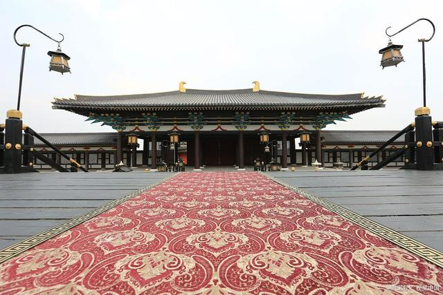
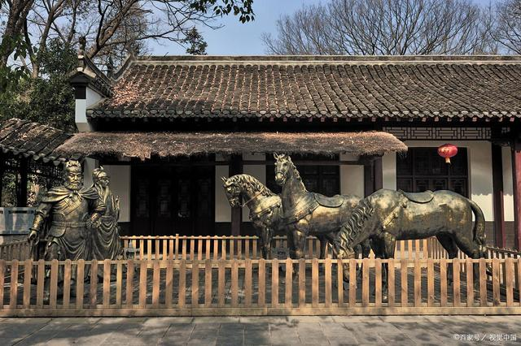
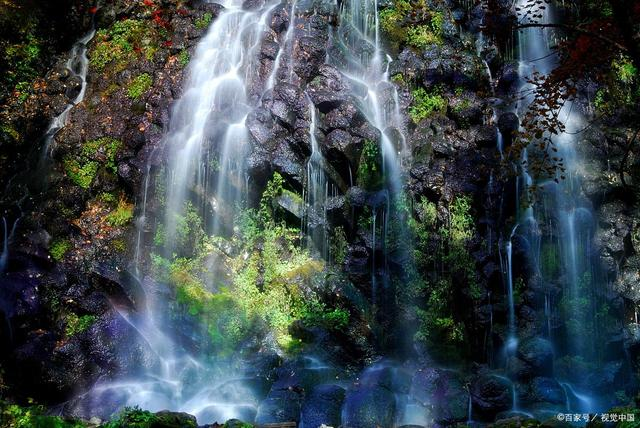
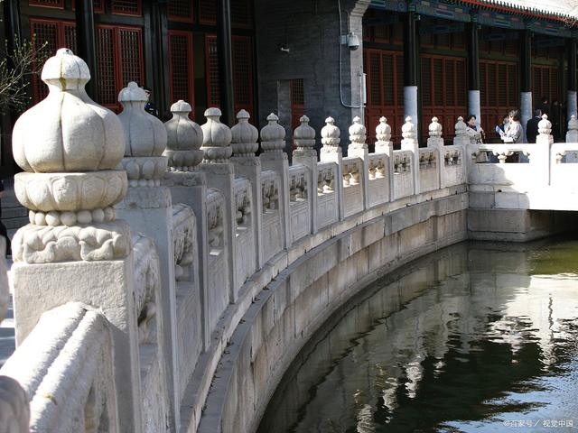
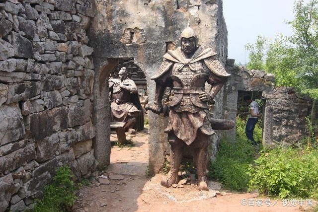

当前积分 609
当前积分 609 40000-40000
40000-40000 999+
999+


湖北襄阳是我国历史文化名城，优秀旅游城市，古代襄阳是兵家必争之地，华夏第一城池，今天我们就来看一下，去襄阳旅游有哪些好玩的地方，襄阳不容错过的旅游景点。
一：中国唐城影视基地，演出表演很多，表演也很精彩，可以租汉服古装在里面拍照，古城风景很漂亮，晚上的灯光演出相当的精彩，挺好玩的！水上灯光秀也很精彩！里面的吃的玩的都挺丰富的！对于现在省内游来说，这个景点相当不错，有点类似宋城和清明上河园。
二：古隆中，环境真的是太好了，山清水秀，离襄樊市区又有一段距离，很适合隐居，景区内有山，有水，有三顾堂，会客的地方等等，结合三国的故事，想象诸葛亮当时隐居在此，自己耕作，刘备带着关羽，张飞来到此地，山里有仙境，水里有云雾，下山还有滑滑梯。
三：五道峡，风景优美，山清水秀，瀑布很美，溶洞里特别凉快，像开了空调一样，景区有玻璃桥，站在玻璃山上看风景真的超美，自然风光美丽无比，空气很清新，里面还有钟乳石，还有瀑布， 还有滑索道等等，山路相对平缓，走着不累。
四：中国汉城汉宫景区，景区不大，但是表演安排的满满当当，跟着表演的方向走，能玩上小半天时间，是以影视拍摄服务为主，兼具娱乐休闲、旅游观光等功能，汉城影视基地主要景点由汉宫、西市汉街、文化广场、报恩寺东市等多余处影视拍摄景观组成，以汉代文化为背景的仿古建筑群。
五：襄阳春秋寨景区，因为当年楚国为了抵御外敌侵略，修筑了这个寨子，整个寨子高居鲤鱼山的山脊之上，地势险要，山环水绕，有“一夫当关，万夫莫开”的好处，这里山势如刀削斧劈，陡峭险峻。山上依山而建的寨子地形独特，三面环水，一面连山。房屋都用石头砌成，鳞次栉比，蔚为壮观。集奇秀险为一体，人文景观和自然景观珠联璧合，美不胜收。
市旅发委产业促进科科长赵晖表示，我市国家3A级景区队伍的壮大，将进一步提升我市旅游业发展的核心竞争力，提高我市旅游产业经济效益，促进我市旅游业转型升级，为洛阳市发展全域旅游及创建国际文化旅游名城提供强大支撑。(金曦 林琳)(2月4日至9日)。待公示结束，我市国家A级旅游景区数量将达到46家。